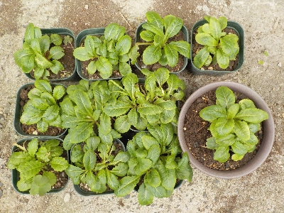
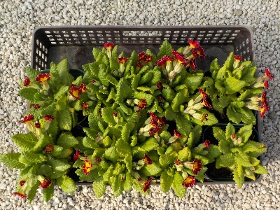

更新日 : 2025/10/25

去年大きな鉢でプリムラをそだてたら、葉っぱが茂って野菜っぽくなりました。
玄関に野菜が置いてあるみたいな感じになって、違和感があったので今年は小さく育てるつもりです。
夏の間に脇芽が出てますね。取った方がスッキリしていいんだろうけど、ごちゃごちゃしているのも面白そうなので、このままの状態で育てます。
更新日 : 2026/03/28

プリムラは水の消費量が多いので、ケースに入れて育てています。
まとめて入れているので、可愛さ半減です。
ケースから出せばいいんですが、そうすると水やりが面倒です。
なのでケースに入れたまま花を楽しもうと思います。
可愛い方が絶対いい。そうに決まっている。
【おいしいものを食べよう。】【たくさん寝よう。】
【ソロ活をしよう!】【季節感のあることをしよう。】【動画視聴はほどほどに。】【当サイトの全てのコンテンツは無断転載禁止です。】